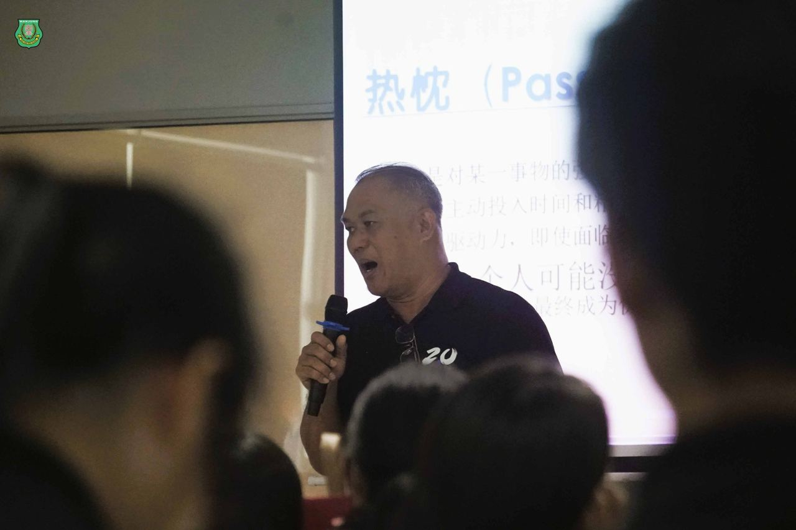
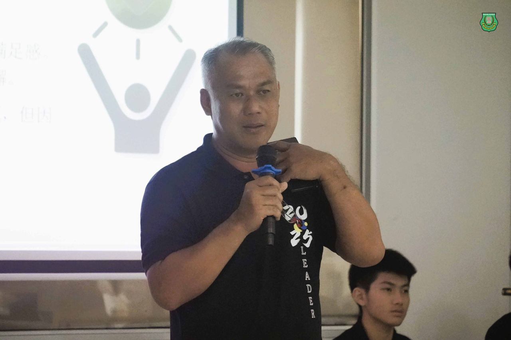
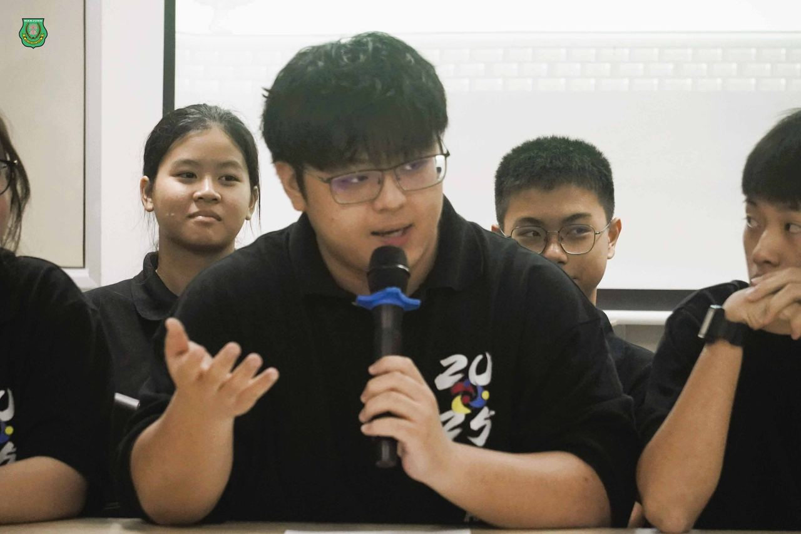
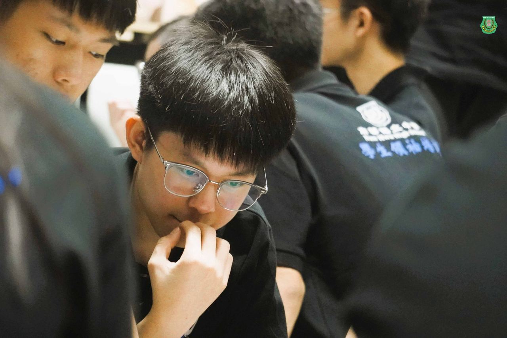
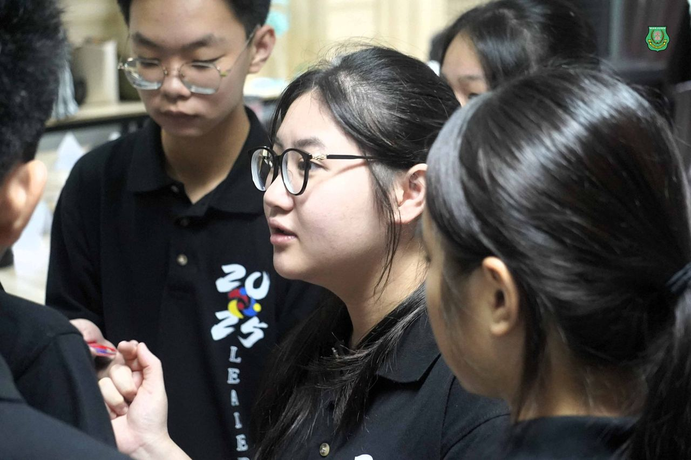
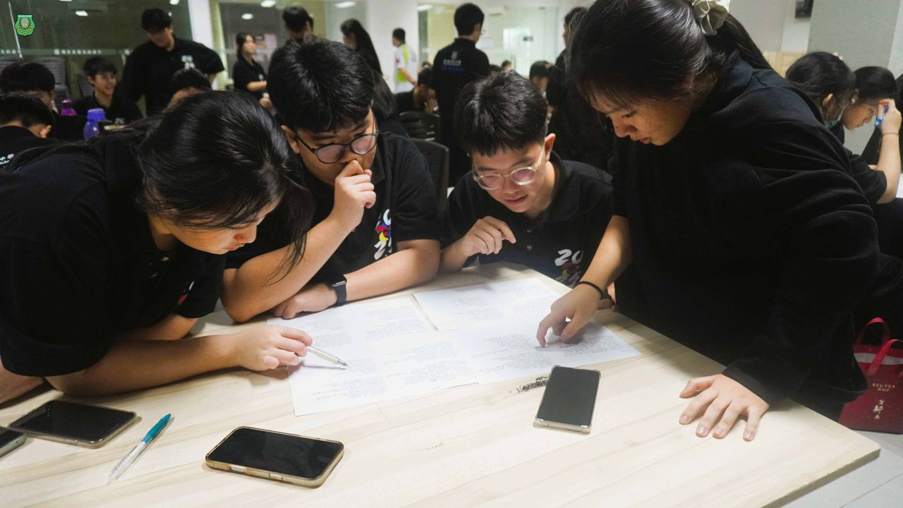
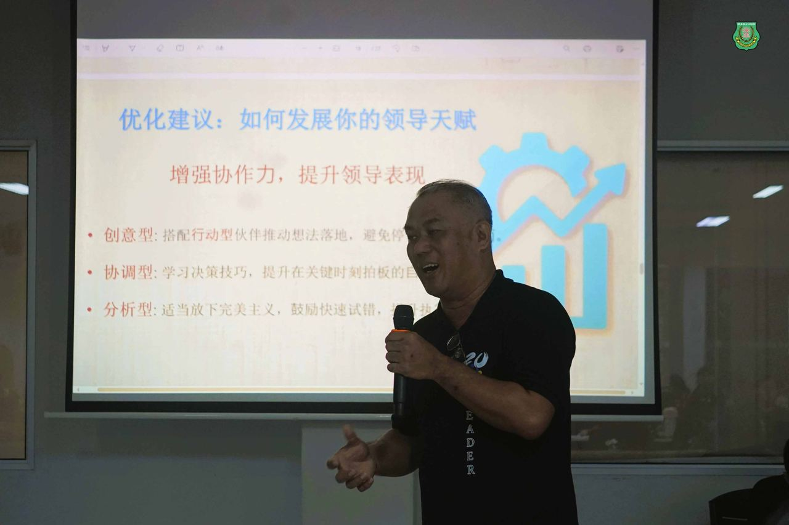
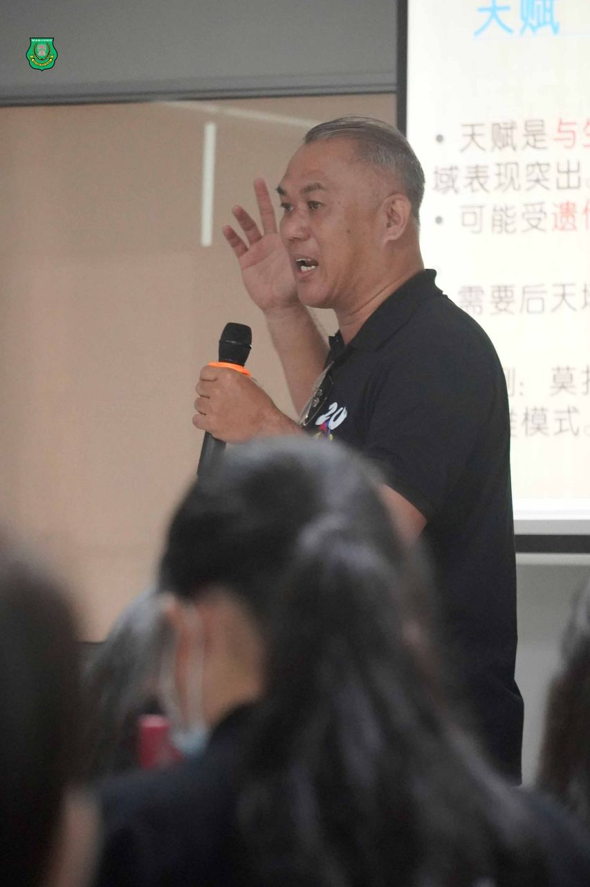

学生领袖培训系列报导之三
学生领袖培训系列报导之三
发掘天赋，点燃他人
何添胜董事谈“有温度的领袖”
“领导不是发号施令，而是 #点燃团队的心。” 在2025年学生领袖培训计划的第三场讲座中，本校董事总务何添胜先生以《 #成为有温度的领袖》为题，展开一场动人心弦又思维深刻的分享。他以“热忱、天赋、感恩”三重主题为主轴，带领全场学生重新定义“领袖的体温”——那是影响力之外，能被信任、被跟随的内在磁场成为有温度的领袖。
#热忱：领导力的内燃机
讲座一开始，何董事便提醒学生：“热忱是坚持的燃料，是让你愿意熬夜排练、冒雨到校的原因。”他分享“如何发现热忱”的五个路径，包括SMART目标设定、自我内观、社交圈筛选、多尝试与终身学习。尤其是“热忱宣言”活动让许多学生在现场写下：“我愿意为××坚持到底，因为我想让别人相信，××是有意义的事。”成为有温度的领袖
#天赋：认清你天生优势的地图
第二部分围绕“天赋”，何董事以“起点优势”作比喻，强调：“每个人都有能发光的位置，关键是你是否看见、愿意训练。”随即便介绍四种领导型天赋：
行动型（执行力强）
创意型（想法丰富）
协调型（善解人意）
分析型（理性审慎）
#感恩：影响力的根，领导的温度
“一个懂得感恩的领袖，才值得被长期追随。” 这句金句是全场最被默默记下的一句话之一。何董事指出，感恩不是附属品，而是连接团队、赢得信任、维系合作的“关系润滑剂”。他带领学生写下“感恩日记”模板，并鼓励每周亲口向三位队员或老师表达感谢之情成为有温度的领袖。
#30天领袖挑战计划：逐步升温，推而广之
讲座最后，何董事提出“30天领袖挑战计划”：每天为团队付出一件小事；带领一次任务，用不熟悉方式执行；每周面对面感谢三人，建立正向文化成为有温度的领袖。他强调：“领导力的旅程，从心出发；热忱点燃，天赋成型，感恩延续。”
讲座的尾声，何董借用泰戈尔诗句作总结：
《#用生命影响生命》
把自己活成一束光，
因为你不知道谁会借着你的光走出黑暗!
请你保持心中的善良，
因为你不知道谁会借着你的善良走出绝望!
请你保持自己的信仰，
因为你不知道谁会借着你的信仰走出来迷茫!
请相信自己的力量，
因为你不知道谁会因为你的相信而相信自己!
愿我们每个人都可以活出一束光，
绽放着所有的美好!
相信讲座中传递的精神将深深烙印在未来领袖的心中，成为了导航前行的坐标与印记。







